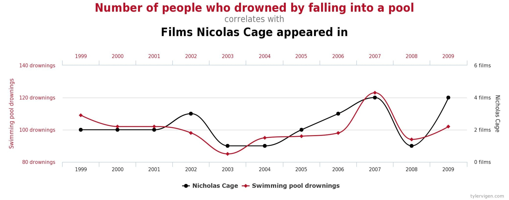

Modern economics workshop on empirical research…for non-economists!
(1) models and language of empirical economics
![]()
October 17, 2025
Overview
- This presentation is designed as one of the first sessions for a series of workshops on empirical economics for non-economists.
Today’s goal
- Briefly review what empirical economics is and some key concepts.
- Provide some examples of empirical research.
- Provide some technical jargons used in empirical economics.
- Caution: I am not an expert. My definition and explanation may not be 100% accurate.
Acknowledgments
- Many concepts and definitions are borrowed from Phil haile’s slide on Models, measurement, and the language of economics.
- Think of this as a concise, easier version of it.
(Brief) What is empirical economics?
- Essentially, any research that involves using real-world data.
- More formally, using data and economic models to identify and understand certain phenomena in the real world.
- While topics of empirical econmics are vast, its power lies in (mostly) coherent set of tools and tehcniques to understand topics of interest.
- Due to its flexibility, tools and methods from empirical economics are widely used in other fields, such as psychology, sociology, political science, etc.
Example: legalized abortion and crime
Types of empirical work
While taxonomy can vary, we can broadly categorize empirical work into three types: descriptive (correlation) and structural (causation).
Descriptive
Descriptive empirical work refers to studies that describe the relationship between observed variables.
- Example:
- income is correlated with education level.
- crime rate is correlated with poverty rate.
- immigration is correlated with crime rate.
Usually a great starting point for empirical research.
But correlation is not causation!
- Many real world observations are correlated, but not always causally related.
But that is obvious!
- Certain correlations can appear highly convincing as evidence of causality, but they are not.
- Example: In many films and TV shows, it often seems that more attractive actors are not as strong in their acting abilities.
- Maybe in general, there is a negative relationship between attractiveness and acting abilities?
Collider bias
- Suppose actually there was no correlation.
Collider bias
- In order to be an actor, one needs to be above some threshold that is comibnation of talent and appearance.
Collider bias
- Now get a correlation between talent and appearance only from points above the threshold.
- It became -0.5!
Structural and (structural) models
Structural empirical work aims to quantify certain features of the assumed data generating process (DGP, i.e. structure).
- These features are usually implied to have causal interpretation.
- Example: estimate demand for schools, demand for education, etc.
- This is now more than just a statistical model. We are imposing certain assumptions (or structures) on the way data is generated.
- From now on, we will use the term “structural model” to refer to this type of model that characterizes the underlying true structure of the data generating process.
Causal inference and counterfactuals
What is causal inference or causal effect?
- Simply put, it is the effect of a change in one variable on another variable (but nothing else).
- This induces the term counterfactuals. Holding other things fixed means we need to consider what would have happened if the other things were different.
- This parallel world notion of things is called counterfactual.
Example: UPenn admissions and job market outcomes
- Your research question: Does getting into Penn graduate school (X) increase your job market outcomes (Y)?
(We surely hope so!)
- In application, you would run some regression like: \(Y = \alpha + \beta X + \epsilon\).
- But will this work? Will the estimate we get be the parameter that we want to get?
Example: UPenn admissions and job market outcomes
- It might actually not be the effect of Penn but just that more talented students are more likely to get into Penn and more likely to have better job market outcomes.
- In order to exactly estimate the CAUSAL effect of Penn admissions on job market outcomes, we need a way to shut down the effect of talent (Z).
Identification
- Identification is also a term used a lot in empirical economics.
- It is also related to what we just talked about.
- Roughly speaking, identification is the process of finding a way to retrieve the (unique) causal effect of interest from the observed data.
- So in the previous slide, people would say “we want to find a way to identify the causal effect of Penn admissions on job market outcomes”.
Ideal case? Randomized controlled trial (RCT)
- Easiest way to identify the causal effect of interest is to run a randomized controlled trial (RCT).
- Simple in theory since we can randomly assign the treatment (Penn admissions) to the subjects.
- But in practice, it is often difficult to implement (randomly assigning Penn admissions is not feasible).
Quasi-experiments?/natural experiments?
- Not ideal, but sometimes we can use certain real world intervention that acted as if random to identify the causal effect of interest.
- Example: Effect of natural disasters on economic activity.
- Example: Staggered adoption of governmental policies.
- Recent popularity of causal inference is largely due to the researcher’s clever use of quasi-experiments to identify causal effects.
Reduced-form approach
- We need to assume some structure and model to say anything about the causal effect of interest.
- But how we impose the model have some leeway.
- Complicated model might be imposing too much assumptions on the data generating process.
- Reduced-form approach is a broad umbrella term for model that does not impose strong functional forms on the model and focus on the use of quasi-experiments or natural experiments to identify causal effects.
Structural approach
- You will also hear (especially in Econ.) some people say they do “structrual”/“structual model” as opposed to “reduced-form”.
- The term “structure” here refers to a different conceptual layer than the structural model we talked about earlier (reduced-form is also structural in terms of the previous definition).
- In general, this just mostly means opposite of “reduced-form”. You have a more complex model or are estimating some sort of “primitive” parameters of interest.
- Personally, I think this is a bit of a misnomer.